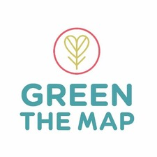
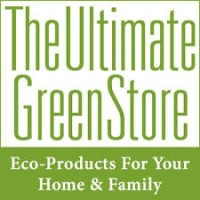
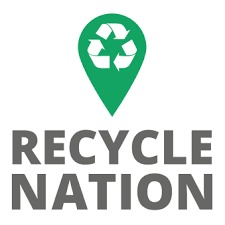
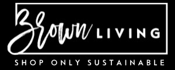
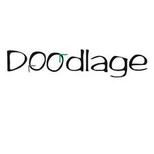

Solution
Why recycling is best solution to reduce your carbon footprint ?
Recycling stands as a pivotal solution to diminish carbon footprint, offering a multifaceted approach towards environmental sustainability. By repurposing materials, recycling substantially curtails the energy-intensive processes associated with raw material extraction and manufacturing. This not only conserves vital resources but also mitigates greenhouse gas emissions. Additionally, recycling diminishes the volume of waste sent to landfills, averting the release of harmful pollutants. Embracing recycling practices not only fosters a circular economy but also empowers individuals to actively contribute to the global fight against climate change, creating a more sustainable and resilient planet for current and future generations.
Check out these websites that sell recycled goods:
-
Rebottled revolutionizes sustainability with its exquisite glassware crafted from repurposed wine bottles. Each piece, meticulously handmade in the Netherlands, harmonizes elegance and environmental responsibility. By upcycling discarded bottles, Rebottled presents a unique and stylish alternative for conscious consumers, fostering a commitment to both luxury and eco-conscious living. Elevate your drinking experience with these thoughtfully designed, repurposed creations that redefine the intersection of sophistication and environmental awareness.
- 
Green the Map, an eco-conscious platform, offers a vibrant array of upcycled and sustainable products. From trendy bags to chic accessories, their collection showcases a commitment to ethical fashion and environmental responsibility. Each unique item, crafted from discarded materials, represents a stylish choice for those seeking to make a positive impact while embracing a fashion-forward and eco-friendly lifestyle.
- 
The Ultimate Green Store is a one-stop-shop for eco-friendly living, featuring a curated selection of sustainable products. From organic bedding to recycled home goods, their collection reflects a commitment to ethical and green living. By offering eco-conscious alternatives, this online store empowers consumers to make environmentally friendly choices without compromising style or functionality. Elevate your lifestyle with thoughtfully sourced and responsibly produced items, fostering a greener and healthier planet for all.
- 
Recycle Nation is your go-to resource for all things recycling. With comprehensive guides, informative articles, and interactive tools, the platform educates users on responsible waste management. Discover recycling options for various materials, learn about eco-friendly practices, and locate recycling centers near you. Whether you're a seasoned environmentalist or a newcomer to sustainable living, Recycle Nation provides valuable insights to promote a greener, more sustainable future for individuals and communities.
- 
Brown Living, an eco-conscious marketplace in India, curates a diverse collection of sustainable and ethical products. From organic clothing to eco-friendly home goods, Brown Living is committed to offering environmentally responsible choices. The platform empowers consumers to make mindful decisions, supporting a green lifestyle. With a focus on sustainability, fair trade, and eco-friendly practices, Brown Living provides a marketplace where conscious shoppers can discover and embrace products that align with their values.
- 
Doodlage, a trailblazing sustainable fashion brand in India, redefines style with its commitment to ethical practices. Known for upcycling textile waste into chic clothing, Doodlage embodies a zero-waste philosophy. Each garment tells a unique story, combining fashion-forward design with environmental consciousness. With a focus on reducing the fashion industry's impact, Doodlage pioneers a conscious approach to dressing, offering consumers an opportunity to make a statement both in style and sustainable living.